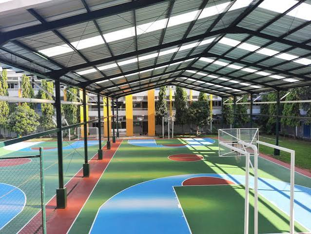

Laporkan setiap masalah di lingkungan sekolah — dari fasilitas rusak hingga keluhan akademik — secara cepat, transparan, dan terstruktur. Setiap laporan ditangani langsung oleh tim yang bertanggung jawab.
Kami membangun IDN E-Report untuk mempermudah seluruh warga sekolah menyampaikan keluhan dan aspirasi. Setiap laporan yang masuk akan diproses secara cepat dan transparan oleh tim yang bertanggung jawab.
Laporan ditindaklanjuti dalam waktu singkat oleh tim terkait.
Pantau status laporan Anda secara real-time kapan saja.
Data laporan Anda dijaga kerahasiaannya dengan ketat.
Siswa, guru, dan staf semua bisa menggunakan platform ini.
Sampaikan laporan Anda sesuai kategori yang tersedia agar dapat ditangani oleh tim yang tepat dan berwenang di bidangnya.
Laporkan kendala terkait proses belajar mengajar, tugas, nilai, atau hal lain yang berkaitan dengan kegiatan akademik di sekolah.
Laporkan SekarangSampaikan laporan mengenai kerusakan atau kekurangan fasilitas sekolah dan asrama agar segera dapat ditindaklanjuti oleh pihak terkait.
Laporkan SekarangRasa tidak nyaman atau masalah sensitif dapat dilaporkan secara anonim. Identitas Anda akan tetap terjaga kerahasiaannya sepenuhnya.
Laporkan SekarangBerikut beberapa laporan terbaru yang masuk ke sistem IDN E-Report, mencakup berbagai kategori dari akademik, fasilitas, hingga anonim.

AC di ruang kelas tidak dapat digunakan sehingga kondisi belajar terasa sangat panas dan tidak kondusif.
SelengkapnyaPapan tulis di ruang kelas mengalami kerusakan parah sehingga guru dan siswa kesulitan dalam proses belajar mengajar.
SelengkapnyaBeberapa lampu di koridor asrama mati total, membuat area gelap dan berbahaya terutama saat malam hari.
SelengkapnyaBerikut jawaban atas pertanyaan yang paling sering ditanyakan seputar IDN E-Report. Ada pertanyaan lain? Hubungi tim kami.